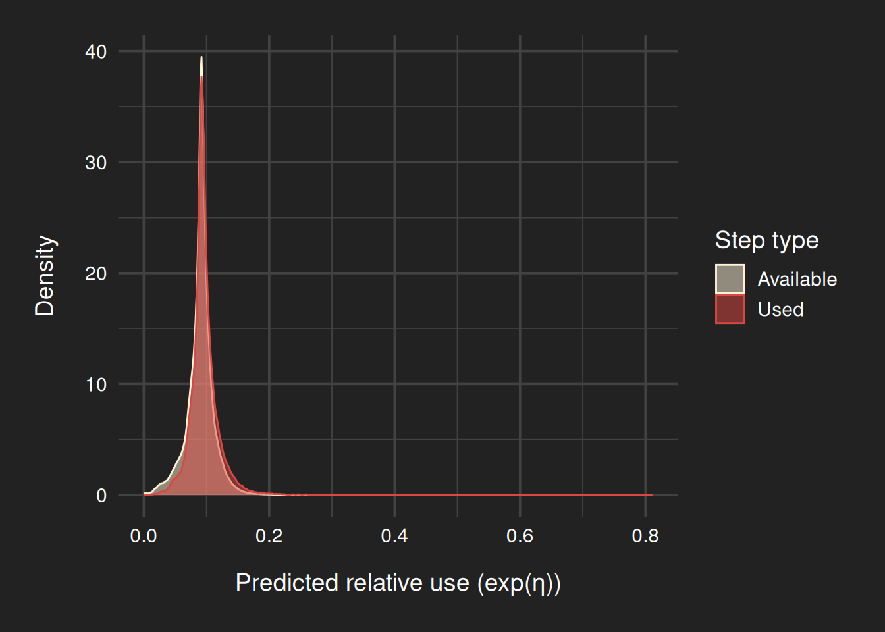

# 0. Setup ----------------------------------------------------------------
# Load libraries
pacman::p_load(
tidyverse,
amt,
sf,
geosphere,
terra,
MASS,
glmmTMB,
emmeans,
paletteer,
gratia,
ggridges,
performance
)
# Set options
options(scipen = 999) # Turn off scientific notation
options(digits = 15) # Set digits to 15 to ensure GPS coordinates aren't truncated
nt = parallel::detectCores() - 2 # Set number of threads for modelling
# Define common plot theme
theme_publication_dark <- function(base_size = 14, legend_position = "bottom") {
theme_minimal(base_size = base_size) +
theme(
legend.position = legend_position,
text = element_text(color = "white"),
axis.text = element_text(color = "white"),
panel.background = element_rect(fill = "#222222", color = NA),
plot.background = element_rect(fill = "#222222", colour = NA),
panel.grid = element_line(color = "#424242"),
legend.background = element_rect(fill = "#222222", color = NA),
legend.key = element_rect(fill = "#222222", color = NA),
strip.text = element_text(color = "white", size = 10),
plot.title = element_text(margin = margin(b = 15)),
axis.title.x = element_text(margin = margin(t = 15)),
axis.title.y = element_text(margin = margin(r = 15)),
plot.margin = margin(20, 20, 20, 20, unit = "pt")
)
}
# Define color palette
landuse_colors <- paletteer_d("nationalparkcolors::Badlands") |>
setNames(c("Water", "Cropland", "BuiltUp", "TreeCover", "Open"))
# 1. Data Preparation -----------------------------------------------------
# 1.1 Load, visualize and filter raw tracking data ------------------------
tracking_data <- read_delim("data/bobcat_coyotes_wa_gps.csv") |>
dplyr::rename(
long = `location-long`,
lat = `location-lat`,
id = `individual-local-identifier`,
timestamp = `timestamp`,
species = `individual-taxon-canonical-name`) |>
dplyr::arrange(id, timestamp) |>
dplyr::select(id, species, timestamp, lat, long) |>
# Filter out MVBOB71M after dispersal
dplyr::filter(!(id == "MVBOB71M" & timestamp > as.POSIXct("2019-09-24 00:00:00")))Rows: 121706 Columns: 15
── Column specification ────────────────────────────────────────────────────────
Delimiter: ","
chr (7): gps:fix-type-raw, mortality-status, sensor-type, individual-taxon-...
dbl (6): event-id, location-long, location-lat, gps:hdop, gps:satellite-cou...
lgl (1): visible
dttm (1): timestamp
ℹ Use `spec()` to retrieve the full column specification for this data.
ℹ Specify the column types or set `show_col_types = FALSE` to quiet this message.# 1.2 Create amt tracks ---------------------------------------------------
track <- tracking_data |>
nest(data = c(-id, -species)) |>
mutate(trk = map(data, ~ make_track(.x, long, lat, timestamp, crs = 4326)))
# Summarize sampling rate
trackSummary <- track |>
mutate(sr = lapply(trk, summarize_sampling_rate, time_unit = "hour")) |>
dplyr::select(id, sr) |>
unnest(cols = sr) |>
left_join(distinct(dplyr::select(tracking_data, id, species))) |>
arrange(species, median)Joining with `by = join_by(id)`print(trackSummary, n = 70)# A tibble: 70 × 11
id min q1 median mean q3 max sd n unit species
<chr> <dbl> <dbl> <dbl> <dbl> <dbl> <dbl> <dbl> <int> <chr> <chr>
1 MVCOY100F 3.98 4 4 4.16 4 12 0.855 634 hour Canis latr…
2 MVCOY18F 3.93 4 4 4.56 4 68 2.70 2383 hour Canis latr…
3 MVCOY56M 3.98 4 4 4.11 4 12 0.739 1291 hour Canis latr…
4 MVCOY58M 3.97 4 4 4.22 4 20 1.15 3596 hour Canis latr…
5 MVCOY59F 3.95 4 4 4.24 4 20 1.22 1217 hour Canis latr…
6 MVCOY60M 3.93 4 4 4.61 4 60 2.46 2956 hour Canis latr…
7 MVCOY63M 3.95 4 4 4.32 4 24 1.57 3615 hour Canis latr…
8 MVCOY68F 3.93 4 4 4.56 4 316 5.74 6882 hour Canis latr…
9 MVCOY72F 3.98 4 4 4.91 4 16 2.14 75 hour Canis latr…
10 MVCOY73M 3.95 4 4 4.59 4 160 3.51 2737 hour Canis latr…
11 MVCOY74M 3.97 4 4 4.64 4 28 2.09 793 hour Canis latr…
12 MVCOY79F 3.93 4 4 4.31 4 36 1.61 3625 hour Canis latr…
13 MVCOY81M 3.93 4 4 4.33 4 20 1.47 2963 hour Canis latr…
14 MVCOY82M 3.93 4 4 4.64 4 40 2.19 1349 hour Canis latr…
15 MVCOY92M 3.97 4 4 4.27 4 40 1.67 1426 hour Canis latr…
16 MVCOY97M 3.95 4 4 4.60 4 16 1.72 731 hour Canis latr…
17 MVCOY98M 3.95 4 4 4.44 4 16 1.52 1512 hour Canis latr…
18 NECOY14M 3.93 4 4 4.40 4 12 1.47 91 hour Canis latr…
19 NECOY17M 3.97 4 4 4.09 4 12 0.602 1989 hour Canis latr…
20 NECOY1F 1.32 4 4 4.44 4 48 2.08 2917 hour Canis latr…
21 NECOY20F 3.97 4 4 4.43 4 48 2.11 1483 hour Canis latr…
22 NECOY21F 3.93 4 4 4.62 4 76 2.47 3470 hour Canis latr…
23 NECOY29M 3.93 4 4 4.98 4 192 5.03 1905 hour Canis latr…
24 NECOY2M 0.483 4 4 4.11 4 16 0.768 3974 hour Canis latr…
25 NECOY31M 3.95 4 4 4.71 4 16 2.04 564 hour Canis latr…
26 NECOY36M 3.95 4 4 4.15 4 16 0.869 3254 hour Canis latr…
27 NECOY3F 3.95 4 4 4.60 4 40 2.02 2954 hour Canis latr…
28 NECOY42F 3.97 4 4 6.13 8 24 3.79 158 hour Canis latr…
29 NECOY43F 1.83 4 4 7.40 8 76 5.37 2083 hour Canis latr…
30 NECOY44M 3.93 4 4 4.89 4 68 2.55 3694 hour Canis latr…
31 NECOY4M 3.95 4 4 4.30 4 24 1.40 3417 hour Canis latr…
32 NECOYaF 3.95 4 4 4.28 4 24 1.51 2769 hour Canis latr…
33 MVCOY65M 4 12 24 43.4 60 172. 43.5 242 hour Canis latr…
34 NECOY12F 3.98 20.0 24 46.9 48 344. 51.4 110 hour Canis latr…
35 MVBOB51M 3.93 4 4 7.57 8 56 5.94 1259 hour Lynx rufus
36 MVBOB52M 3.93 4 4 5.87 8 44 3.94 2214 hour Lynx rufus
37 MVBOB54F 3.95 4 4 5.12 4 76 3.83 997 hour Lynx rufus
38 MVBOB55M 3.93 4 4 9.11 12 108 8.94 950 hour Lynx rufus
39 MVBOB62M 3.93 4 4 4.68 4 68 2.80 1746 hour Lynx rufus
40 MVBOB66M 3.93 4 4 5.04 4 48 2.66 3000 hour Lynx rufus
41 MVBOB67M 2.62 4 4 6.42 8 94.8 4.99 2209 hour Lynx rufus
42 MVBOB69F 2.6 4 4 8.53 12 132 7.78 1575 hour Lynx rufus
43 MVBOB71M 3.97 4 4 5.12 4 28.0 2.75 1932 hour Lynx rufus
44 MVBOB85F 3.93 4 4 5.29 4 52 4.02 1526 hour Lynx rufus
45 MVBOB90M 3.93 4 4 5.05 4 44 3.00 1041 hour Lynx rufus
46 MVBOB99F 3.93 4 4 7.56 8 84 6.86 372 hour Lynx rufus
47 NEBOB13F 3.33 4 4 7.63 8 152. 7.39 1722 hour Lynx rufus
48 NEBOB35M 3.93 4 4 5.04 4 36 2.51 1589 hour Lynx rufus
49 NEBOB38M 2.22 4 4 5.18 4 32.0 2.91 2442 hour Lynx rufus
50 NEBOB41F 3.93 4 4 12.8 9.03 908 43.9 988 hour Lynx rufus
51 NEBOB45M 3.03 4 4 4.82 4 28 2.31 1606 hour Lynx rufus
52 NEBOB5M 3.95 4 4 7.47 8 72 6.27 832 hour Lynx rufus
53 NEBOB6F 3.93 4 4 4.91 4 44 2.87 2552 hour Lynx rufus
54 NEBOB7F 0.467 4 4 5.08 4.02 104. 4.18 2629 hour Lynx rufus
55 NEBOB32F 2.27 4 4.05 8.49 11.9 104. 7.42 1176 hour Lynx rufus
56 MVBOB83M 3.08 4 4.07 8.89 12 120 7.86 1592 hour Lynx rufus
57 MVBOB76M 2.8 4 7.95 8.62 12 100 7.15 1647 hour Lynx rufus
58 MVBOB77M 3.93 4 8 12.7 16 268 15.4 1045 hour Lynx rufus
59 MVBOB80M 3.93 4 8 9.81 12 196 12.1 1423 hour Lynx rufus
60 NEBOB10F 3.93 4 8 11.1 12 272 16.6 1222 hour Lynx rufus
61 NEBOB11M 4 4 8 11.7 18 48 11.1 27 hour Lynx rufus
62 NEBOB16M 3.93 4 8 8.50 12 84 6.76 1273 hour Lynx rufus
63 NEBOB23M 3.93 4 8 9.95 12 308 13.1 1395 hour Lynx rufus
64 NEBOB25F 3.93 4 8 9.47 12 100 8.23 1515 hour Lynx rufus
65 NEBOB33M 1.72 4 8 14.2 16 544 30.2 929 hour Lynx rufus
66 NEBOB37M 3.93 4 8 11.2 12 104 11.5 655 hour Lynx rufus
67 MVBOB91M 4 4 12 11.7 18 24 7.48 15 hour Lynx rufus
68 NEBOB8M 3.93 4 12 17.2 20 268 21.9 383 hour Lynx rufus
69 MVBOB88M 3.93 8 16 22.4 28.0 172. 24.1 554 hour Lynx rufus
70 MVBOB87M 3.95 16.0 40 53.8 71.0 336 54.6 126 hour Lynx rufus # Get the individual sampling rates, for plotting
trackSummarySamples <- track |>
mutate(sr = lapply(trk, summarize_sampling_rate, time_unit = "hour", summarize = FALSE)) |>
dplyr::select(id, sr) |>
unnest(cols = sr) |>
mutate(species = ifelse(grepl("BOB", id), "Bobcat", "Coyote"))
ggplot(trackSummarySamples,
aes(x = species, y = sr,
fill = species,
color = species)) +
stat_boxplot(geom = "errorbar", width = 0.4, linewidth = 0.7) +
geom_boxplot(outlier.shape = NA, linewidth = 0.7) +
scale_fill_manual(values = c(Bobcat = "#723735")) +
scale_color_manual(values = c(Bobcat = "#DB4743FF", Coyote = "#5495CFFF")) +
labs(x = NULL, y = "Sampling interval in hours") +
coord_cartesian(ylim = c(0, 15)) +
theme_publication_dark() +
theme_publication_dark(legend_position = "none") +
theme(panel.grid.major.x = element_blank())
#GPS sampling interval by species (outliers hidden)
ggsave("img/bobcat_coyote_sampling_rates.png", width = 5, height = 4, dpi = 300)
ggplot(trackSummarySamples,
aes(x = species, y = sr,
fill = species,
color = species)) +
geom_boxplot(outlier.alpha = 0.5, width = 0.7, linewidth = 0.7) +
scale_color_manual(values = c(Bobcat = "#DB4743FF", Coyote = "#5495CFFF")) +
labs(x = NULL, y = "Sampling interval in hours") +
coord_cartesian(ylim = c(0, 1000)) +
theme_publication_dark(legend_position = "none") +
theme(panel.grid.major.x = element_blank())
#GPS sampling interval by species (outliers shown)
ggsave("img/bobcat_coyote_sampling_rates_outliers.png", width = 5, height = 4, dpi = 300)
# Split into species
coyote <- filter(track, grepl("COY", id))
bobcat <- filter(track, grepl("BOB", id))
# 1.3 Resample tracks and generate steps ----------------------------------
# Omitting coyote in row 8 and 19; too few consecutive data points - causing function to fail
coyote1 <- coyote[-c(8, 19), ] |>
mutate(stp = map(trk, function(df)
df |>
track_resample(rate = hours(4), tolerance = minutes(10)) |>
steps_by_burst() |>
random_steps(n_control = 10) %>%
mutate(log_sl_ = log(sl_ + 1), cos_ta_ = cos(ta_)))) |>
dplyr::select(-data, -trk) |>
unnest(cols = stp) |>
mutate(case_binary_ = ifelse(case_ == TRUE, 1, 0))Warning: There were 181 warnings in `mutate()`.
The first warning was:
ℹ In argument: `stp = map(...)`.
Caused by warning in `random_steps.bursted_steps_xyt()`:
! Some bursts contain < 3 steps and will be removed
ℹ Run `dplyr::last_dplyr_warnings()` to see the 180 remaining warnings.# Omitting bobcat in row 15 and 18; too few consecutive data points - causing function to fail
bobcat1 <- bobcat[-c(15, 18), ] |>
mutate(stp = map(trk, function(df)
df |>
track_resample(rate = hours(8), tolerance = minutes(10)) |>
steps_by_burst() |>
random_steps(n_control = 10) |>
mutate(log_sl_ = log(sl_ + 1), cos_ta_ = cos(ta_)))) |>
dplyr::select(-data, -trk) |>
unnest(cols = stp) |>
mutate(case_binary_ = ifelse(case_ == TRUE, 1, 0))Warning: There were 240 warnings in `mutate()`.
The first warning was:
ℹ In argument: `stp = map(...)`.
Caused by warning in `random_steps.bursted_steps_xyt()`:
! Some bursts contain < 3 steps and will be removed
ℹ Run `dplyr::last_dplyr_warnings()` to see the 239 remaining warnings.# Save resampled step data
saveRDS(coyote1, "data/coyote_resampled.rds")
saveRDS(bobcat1, "data/bobcat_resampled.rds")
# Function to recalculate step lengths (in meters)
recalc_steps <- function(file) {
readRDS(file) |>
dplyr::select(-log_sl_, -sl_) |>
mutate(
sl_ = distGeo(across(c(x1_, y1_)), across(c(x2_, y2_))),
log_sl_ = log(sl_)
)
}
# Apply to saved data
coyote_resampled <- recalc_steps("data/coyote_resampled.rds")
bobcat_resampled <- recalc_steps("data/bobcat_resampled.rds")
# 1.4 Load covariates, extract to steps -----------------------------------
# Load and prepare rasters
hfp <- rast("data/HFP_washington.tif")
NAflag(hfp) <- 64536 # Set no-data value
hfp_capped <- classify(hfp, matrix(c(50000, Inf, 50000), ncol = 3, byrow = TRUE)) # Cap at 50k
hfp_scaled <- hfp_capped/1000 # Scale to 0-50
land_use <- rast("data/ESA_washington.tif")
# Land use class labels (ESA WorldCover 2021)
esa_labels <- c(
"10" = "Tree cover", "20" = "Shrubland", "30" = "Grassland",
"40" = "Cropland", "50" = "Built-up", "60" = "Bare or sparse vegetation",
"70" = "Snow and ice", "80" = "Permanent water bodies",
"90" = "Herbaceous wetland", "95" = "Mangroves", "100" = "Moss and lichen"
)
# Function to extract covariates
extract_covariates <- function(df) {
df |>
mutate(
human_footprint = terra::extract(hfp_scaled, cbind(x2_, y2_))[, 1],
land_use_code = terra::extract(land_use, cbind(x2_, y2_))[, 1],
land_use = factor(land_use_code, levels = names(esa_labels), labels = esa_labels)
)
}
# Apply extraction to step data
coyote_cov <- extract_covariates(coyote_resampled)
bobcat_cov <- extract_covariates(bobcat_resampled)
# 1.5 Finalize SSF dataset ------------------------------------------------
# Function to format for SSF
prepare_ssf_data <- function(df) {
df |>
mutate(
land_use = as.factor(land_use),
# Group detailed land use categories into broader, ecologically meaningful classes
land_use_grouped = fct_collapse(
land_use,
"TreeCover" = "Tree cover",
"Open" = c("Grassland", "Bare or sparse vegetation", "Moss and lichen"),
"Cropland" = "Cropland",
"BuiltUp" = "Built-up",
"Water" = c("Permanent water bodies", "Herbaceous wetland")
),
# Create unique stratum ID (animal ID + step ID) for conditional logistic model
step_id_ = paste(id, step_id_, sep = "_")
) |>
group_by(id) |>
mutate(n = n() / 11) |> # Calculate number of steps (1 used + 10 available per stratum)
ungroup()
}
# Applying to data
coyote_final <- prepare_ssf_data(coyote_cov)
bobcat_final <- prepare_ssf_data(bobcat_cov)
# Summary of bobcat SSF data revealed too few relocations in key habitat types
# and inconsistent sampling intervals compared to coyotes.
# Therefore, bobcats are excluded from further SSF modeling.
# Save processed data
saveRDS(coyote_final, "data/coyote_ssf_data.rds")
saveRDS(bobcat_final, "data/bobcat_ssf_data.rds")
# 2. Exploratory Data Analysis --------------------------------------------
# Read processed data
coyote_ssf_data <- readRDS("data/coyote_ssf_data.rds")
# Set secondary colors
landuse_colors_sec <- c("TreeCover" = "#4c5133",
"Open" = "#807c70",
"Cropland" = "#7d6139",
"BuiltUp" = "#723735",
"Water" = "#3c566e")
# 2.1 Ridgeline plot (HFP across land cover classes) ----------------------
ggplot(coyote_ssf_data,
aes(x = human_footprint, y = fct_rev(land_use_grouped),
fill = land_use_grouped, color = land_use_grouped)) +
geom_density_ridges(scale = 1.2) +
scale_fill_manual(values = landuse_colors_sec) +
scale_color_manual(values = landuse_colors) +
labs(x = "Human footprint index (0–50)", y = "Land cover type") +
theme_publication_dark(legend_position = "none") +
theme(panel.grid.major.y = element_blank())Picking joint bandwidth of 0.417
#Human Footprint Distribution by Land Cover Type
ggsave("img/coyote_EDA_ridgeline.png", width = 10, height = 5.5, dpi = 300)Picking joint bandwidth of 0.417# 2.2 Boxplot (HFP across land cover classes) -----------------------------
ggplot(coyote_ssf_data,
aes(x = land_use_grouped, y = human_footprint,
fill = land_use_grouped, color = land_use_grouped)) +
stat_boxplot(geom = "errorbar", width = 0.4, linewidth = 0.7) +
geom_boxplot(outlier.alpha = 0.15, outlier.size = 0.5,
width = 0.7, alpha = 1, linewidth = 0.5) +
scale_fill_manual(values = landuse_colors_sec) +
scale_color_manual(values = landuse_colors) +
labs(x = "Land cover type", y = "Human footprint index (0–50)") +
theme_publication_dark(legend_position = "none") +
theme(panel.grid.major.x = element_blank())
#Variation in Human Footprint across Land Cover Types
ggsave("img/coyote_EDA_boxplot.png", width = 10, height = 5.5, dpi = 300)
# 2.3 Bi-variate density plot (HFP vs. log step length) -------------------
dens <- kde2d(coyote_ssf_data$human_footprint, coyote_ssf_data$log_sl_, n = 100)
contour_level <- quantile(dens$z, probs = 0.95) # Get 95% density threshold
ggplot(coyote_ssf_data, aes(x = human_footprint, y = log_sl_)) +
geom_bin2d(aes(fill = after_stat(log(density))), bins = 70) +
scale_fill_viridis_c(option = "D", limits = c(-14.9, -1)) +
geom_vline(xintercept = 0, colour = "gray80", linewidth = 0.6) +
geom_hline(yintercept = 0, colour = "gray80", linewidth = 0.6) +
stat_density_2d(aes(colour = after_stat(level)), breaks = contour_level,
colour = "red", h = 2, linewidth = 0.75) +
labs(x = "Human footprint index (0–50)", y = "Log step length") +
theme_publication_dark(legend_position = "right")
#Relationship between Movement and Human Footprint
ggsave("img/coyote_EDA_hexbin.png", width = 10, height = 6, dpi = 300)
# 3. Coyote SSF Modeling --------------------------------------------------
# Read SSF ready data and filter
coyote_ssf_data <- readRDS("data/coyote_ssf_data.rds") |>
filter(n > 100) # Select animals with more than 100 fixes
# Standardize HFP for modeling
coyote_ssf_data$hfp_std <- scale(coyote_ssf_data$human_footprint)[, 1]
# 3.1 Fit the model -------------------------------------------------------
# Fit SSF with glmmTMB following Muff et al. (2019)
ssf_coyote <- glmmTMB(
case_binary_ ~ -1 +
land_use_grouped * (hfp_std + I(hfp_std^2)) +
log_sl_ +
(0 + land_use_grouped + hfp_std + I(hfp_std^2) + log_sl_|| id) +
(1 | step_id_),
family = poisson,
doFit = TRUE,
data = coyote_ssf_data,
map = list(theta = factor(c(1:8, NA))),
start = list(theta = c(rep(0, times = 8),log(1e3))),
control = glmmTMBControl(parallel = nt)
)
# 3.2 Save fitted model ---------------------------------------------------
saveRDS(ssf_coyote, file = "models/ssf_coyote_model.rds")
ssf_coyote <- readRDS("models/ssf_coyote_model.rds")
# 3.3 Summarize / check model ---------------------------------------------
# Print model summary (fixed effects, random effects, fit statistics)
summary(ssf_coyote) Family: poisson ( log )
Formula:
case_binary_ ~ -1 + land_use_grouped * (hfp_std + I(hfp_std^2)) +
log_sl_ + (0 + land_use_grouped + hfp_std + I(hfp_std^2) +
log_sl_ || id) + (1 | step_id_)
Data: coyote_ssf_data
AIC BIC logLik -2*log(L) df.resid
1244867.3 1245141.1 -622409.6 1244819.3 666224
Random effects:
Conditional model:
Groups Name Variance
id land_use_groupedTreeCover 0.055569998248869663382
land_use_groupedOpen 0.000001026267180479060
land_use_groupedCropland 0.092887072052416586043
land_use_groupedBuiltUp 0.291697185308862738662
land_use_groupedWater 0.000000000073816844615
hfp_std 0.133991081290897179334
I(hfp_std^2) 0.045568557037963267065
log_sl_ 0.000162818311340898577
step_id_ (Intercept) 999999.999999999534338712692
Std.Dev. Corr
0.23573289598371641
0.00101304845909713 0.0000000000
0.30477380473462051 0.0000000000 0.0000000000
0.54008997890061128 0.0000000000 0.0000000000 0.0000000000
0.00000859167298115 0.0000000000 0.0000000000 0.0000000000 0.0000000000
0.36604792212345255 0.0000000000 0.0000000000 0.0000000000 0.0000000000
0.21346792976455098 0.0000000000 0.0000000000 0.0000000000 0.0000000000
0.01276002787382922 0.0000000000 0.0000000000 0.0000000000 0.0000000000
999.99999999999977263
0.0000000000
0.0000000000 0.0000000000
0.0000000000 0.0000000000 0.0000000000
Number of obs: 666248, groups: id, 29; step_id_, 60568
Conditional model:
Estimate Std. Error
land_use_groupedTreeCover -3.07415237263530 4.06357353906574
land_use_groupedOpen -2.79647615761533 4.06333210682469
land_use_groupedCropland -2.81931195637970 4.06476791135366
land_use_groupedBuiltUp -3.51586768431280 4.07061289162120
land_use_groupedWater -3.97072475008586 4.06726356134943
hfp_std 0.26364575880263 0.06987204820331
I(hfp_std^2) -0.18623510016481 0.04184690448278
log_sl_ 0.00762730782932 0.00350259889805
land_use_groupedOpen:hfp_std -0.12437566061456 0.01375973081389
land_use_groupedCropland:hfp_std -0.30262763397863 0.09314011859347
land_use_groupedBuiltUp:hfp_std -0.26818040273319 0.29901482998733
land_use_groupedWater:hfp_std -0.72006498135142 0.23621406872803
land_use_groupedOpen:I(hfp_std^2) 0.00189272090425 0.00563742378047
land_use_groupedCropland:I(hfp_std^2) 0.02483888060471 0.02441783916909
land_use_groupedBuiltUp:I(hfp_std^2) 0.01714227509713 0.06724878760432
land_use_groupedWater:I(hfp_std^2) 0.14380651822655 0.05644843084569
z value Pr(>|z|)
land_use_groupedTreeCover -0.75651 0.44934077
land_use_groupedOpen -0.68822 0.49131274
land_use_groupedCropland -0.69360 0.48793480
land_use_groupedBuiltUp -0.86372 0.38774201
land_use_groupedWater -0.97626 0.32893344
hfp_std 3.77327 0.00016112 ***
I(hfp_std^2) -4.45039 0.0000085714 ***
log_sl_ 2.17761 0.02943480 *
land_use_groupedOpen:hfp_std -9.03911 < 0.000000000000000222 ***
land_use_groupedCropland:hfp_std -3.24917 0.00115744 **
land_use_groupedBuiltUp:hfp_std -0.89688 0.36978299
land_use_groupedWater:hfp_std -3.04836 0.00230096 **
land_use_groupedOpen:I(hfp_std^2) 0.33574 0.73706530
land_use_groupedCropland:I(hfp_std^2) 1.01724 0.30903775
land_use_groupedBuiltUp:I(hfp_std^2) 0.25491 0.79879391
land_use_groupedWater:I(hfp_std^2) 2.54757 0.01084750 *
---
Signif. codes: 0 '***' 0.001 '**' 0.01 '*' 0.05 '.' 0.1 ' ' 1# Estimate marginal trends (linear + quadratic) of HFP across land use types
emtrends(ssf_coyote, ~ land_use_grouped, var = "hfp_std", max.degree = 2) |>
summary(infer = c(TRUE, TRUE))degree = linear:
land_use_grouped hfp_std.trend SE df asymp.LCL asymp.UCL z.ratio p.value
TreeCover 0.26595 0.0699 Inf 0.12903 0.4029 3.807 0.0001
Open 0.14155 0.0701 Inf 0.00413 0.2790 2.019 0.0435
Cropland -0.03698 0.1150 Inf -0.26270 0.1887 -0.321 0.7481
BuiltUp -0.00244 0.3070 Inf -0.60481 0.5999 -0.008 0.9937
Water -0.45589 0.2460 Inf -0.93880 0.0270 -1.850 0.0643
degree = quadratic:
land_use_grouped hfp_std.trend SE df asymp.LCL asymp.UCL z.ratio p.value
TreeCover -0.18624 0.0418 Inf -0.26825 -0.1042 -4.450 <.0001
Open -0.18434 0.0419 Inf -0.26638 -0.1023 -4.404 <.0001
Cropland -0.16140 0.0482 Inf -0.25590 -0.0669 -3.347 0.0008
BuiltUp -0.16909 0.0790 Inf -0.32398 -0.0142 -2.140 0.0324
Water -0.04243 0.0700 Inf -0.17967 0.0948 -0.606 0.5446
Confidence level used: 0.95 # Test for overdispersion
check_overdispersion(ssf_coyote)# Overdispersion test
dispersion ratio = 0.908
Pearson's Chi-Squared = 604911.890
p-value = 1No overdispersion detected.# Calculate VIFs
check_collinearity(ssf_coyote)Model has no intercept. VIFs may not be sensible.
Model has interaction terms. VIFs might be inflated.
Try to center the variables used for the interaction, or check
multicollinearity among predictors of a model without interaction terms.# Check for Multicollinearity
Low Correlation
Term VIF VIF 95% CI Increased SE Tolerance Tolerance 95% CI
land_use_grouped 3.94 [ 3.92, 3.95] 1.98 0.25 [0.25, 0.26]
hfp_std 1.01 [ 1.01, 1.01] 1.00 0.99 [0.99, 0.99]
I(hfp_std^2) 1.01 [ 1.00, 1.01] 1.00 0.99 [0.99, 1.00]
log_sl_ 1.00 [ 1.00, 1.12] 1.00 1.00 [0.89, 1.00]
High Correlation
Term VIF VIF 95% CI Increased SE Tolerance
land_use_grouped:hfp_std 311.45 [309.97, 312.95] 17.65 3.21e-03
land_use_grouped:I(hfp_std^2) 159.97 [159.21, 160.74] 12.65 6.25e-03
Tolerance 95% CI
[0.00, 0.00]
[0.01, 0.01]# Plot predicted vs. observed use
coyote_ssf_data$predicted <- predict(ssf_coyote, type = "response")
ggplot(coyote_ssf_data, aes(x = predicted, fill = as.factor(case_binary_), color = as.factor(case_binary_))) +
geom_density(alpha = 0.5) +
scale_fill_manual(
values = c("1" = "#DB4743FF", "0" = "#FEF4D5FF"),
name = "Step type",
labels = c("1" = "Used", "0" = "Available")) +
scale_color_manual(
values = c("1" = "#DB4743FF", "0" = "#FEF4D5FF"),
name = "Step type",
labels = c("1" = "Used", "0" = "Available")) +
theme_publication_dark(legend_position = "right") +
labs(x = "Predicted relative use (exp(η))", y = "Density")
ggsave("img/coyote_predicted_vs_used.png", width = 10, height = 5.5, dpi = 300)
# 4. Bobcat SSF Modeling --------------------------------------------------
# Read SSF ready data and filter
bobcat_ssf_data <- readRDS("data/bobcat_ssf_data.rds") |>
filter(n > 100) # Select animals with more than 100 fixes
# Standardize HFP for modeling
bobcat_ssf_data$hfp_std <- scale(bobcat_ssf_data$human_footprint)[, 1]
# Counts of used (1) vs. available (0) per land use category
table(case = bobcat_ssf_data$case_binary_,
land_use = bobcat_ssf_data$land_use_grouped) land_use
case TreeCover Shrubland Open Cropland BuiltUp Snow and ice Water Mangroves
0 81184 0 22729 293 89 1 144 0
1 8743 0 1693 6 1 0 1 0# Dropping land use groups with too few used steps
# (virtually no variation in case status)
bobcat_ssf_filtered <- bobcat_ssf_data |>
filter(!(land_use_grouped %in% c("BuiltUp", "Snow and ice", "Water", "Cropland")))
# Fit SSF with glmmTMB following Muff et al. (2019)
ssf_bobcat <- glmmTMB(
case_binary_ ~ -1 +
land_use_grouped * (hfp_std + I(hfp_std^2)) +
log_sl_ +
(0 + land_use_grouped + hfp_std + I(hfp_std^2) + log_sl_|| id) +
(1 | step_id_),
family = poisson,
doFit = TRUE,
data = bobcat_ssf_filtered,
map = list(theta = factor(c(1:5, NA))),
start = list(theta = c(rep(0, times = 5),log(1e3))),
control = glmmTMBControl(parallel = nt)
)Warning in finalizeTMB(TMBStruc, obj, fit, h, data.tmb.old): Model convergence
problem; non-positive-definite Hessian matrix. See vignette('troubleshooting')Warning in finalizeTMB(TMBStruc, obj, fit, h, data.tmb.old): Model convergence
problem; false convergence (8). See vignette('troubleshooting'),
help('diagnose')summary(ssf_bobcat)Warning in sqrt(diag(vcovs)): NaNs produced Family: poisson ( log )
Formula:
case_binary_ ~ -1 + land_use_grouped * (hfp_std + I(hfp_std^2)) +
log_sl_ + (0 + land_use_grouped + hfp_std + I(hfp_std^2) +
log_sl_ || id) + (1 | step_id_)
Data: bobcat_ssf_filtered
AIC BIC logLik -2*log(L) df.resid
NA NA NA NA 114337
Random effects:
Conditional model:
Groups Name Variance
id land_use_groupedTreeCover 0.013219238045356882655
land_use_groupedOpen 0.226065145559517732821
hfp_std 0.020753855645735262009
I(hfp_std^2) 0.004506640749211077851
log_sl_ 0.000000000160353087181
step_id_ (Intercept) 999999.999999999534338712692
Std.Dev. Corr
0.1149749452939939
0.4754630853804717 0.0000000000
0.1440619854289648 0.0000000000 0.0000000000
0.0671315182996115 0.0000000000 0.0000000000 0.0000000000
0.0000126630599454 0.0000000000 0.0000000000 0.0000000000 0.0000000000
999.9999999999997726
Number of obs: 114349, groups: id, 26; step_id_, 10444
Conditional model:
Estimate Std. Error z value
land_use_groupedTreeCover -10.9769533774590 NaN NaN
land_use_groupedOpen -11.3751196336811 NaN NaN
hfp_std 0.0403235126003 0.0379662328199 1.06209
I(hfp_std^2) -0.0615865734820 0.0238307836011 -2.58433
log_sl_ -0.0285534772954 0.0083628069420 -3.41434
land_use_groupedOpen:hfp_std -0.0371044728576 0.0352825642128 -1.05164
land_use_groupedOpen:I(hfp_std^2) -0.0216425372659 0.0239449911762 -0.90384
Pr(>|z|)
land_use_groupedTreeCover NaN
land_use_groupedOpen NaN
hfp_std 0.28819535
I(hfp_std^2) 0.00975688 **
log_sl_ 0.00063936 ***
land_use_groupedOpen:hfp_std 0.29296583
land_use_groupedOpen:I(hfp_std^2) 0.36607811
---
Signif. codes: 0 '***' 0.001 '**' 0.01 '*' 0.05 '.' 0.1 ' ' 1# Bobcat model does not converge when trying to model random slopes for habitat covariates.
# The model would have to be simplified to a point where it cannot follow the suggested method by Muff et al.
# Dropping land groups with too few usable steps greatly reduces the ecological richness of the model.
# The bobcat data cannot support a full, comparable SSF with interaction between habitat and human footprint.
# Bobcats are excluded from the final SSF analysis.
# 4. SSF Results Visualization --------------------------------------------
# 4.1 Predict for average effect plots ------------------------------------
if (file.exists("data/coyote_ssf_pred.rds")) {
coyote_ssf_pred <- readRDS("data/coyote_ssf_pred.rds")
} else {
coyote_ssf_pred <- coyote_ssf_data |>
filter(case_binary_ == 0) |> # remove ID for population-level prediction
mutate(id = NA)
coy_pred <- predict(ssf_coyote, coyote_ssf_pred, re.form = NA, se.fit = TRUE)
coyote_ssf_pred$fit <- coy_pred$fit
coyote_ssf_pred$se <- coy_pred$se
coyote_ssf_pred <- coyote_ssf_pred |> ungroup()
saveRDS(coyote_ssf_pred, "data/coyote_ssf_pred.rds")
}
# 4.2 Average-effect plot function ----------------------------------------
avg_eff_plot_hfp_landuse <- function(fittedResponse,
nsim = 10, k = 10,
showPeakValue = TRUE,
save_path = NULL,
width = 10, height = 5.5, dpi = 300) {
set.seed(123)
fit_sample_matrix <- replicate(nsim, {
rnorm(n = nrow(fittedResponse), mean = fittedResponse$fit, sd = fittedResponse$se)
})
smooth_list <- purrr::map(1:nsim, function(j) {
mgcv::bam(
fit_sample_matrix[, j] ~ s(human_footprint, by = land_use_grouped,
bs = "ts", k = k) + land_use_grouped,
data = fittedResponse,
select = TRUE, discrete = TRUE,
nthreads = nt
) |>
gratia::smooth_estimates(overall_uncertainty = TRUE) |>
gratia::add_confint() |>
dplyr::rename(hfp = human_footprint)
})
avg_smooth <- bind_rows(smooth_list) |>
group_by(.smooth, .by, land_use_grouped, hfp) |>
summarise(
est = mean(.estimate),
lower_ci = mean(.lower_ci),
upper_ci = mean(.upper_ci),
.groups = "drop"
) |>
mutate(land_use_grouped = factor(
land_use_grouped,
levels = c("TreeCover", "Open", "Cropland", "BuiltUp", "Water"))
)
p <- ggplot(avg_smooth,
aes(x = hfp, y = est, colour = land_use_grouped, fill = land_use_grouped)) +
geom_hline(yintercept = 0, linetype = "dashed", colour = "gray50") +
geom_vline(xintercept = 0, linetype = "dotted", colour = "gray70") +
geom_ribbon(aes(ymin = lower_ci, ymax = upper_ci), alpha = 0.2, colour = NA) +
geom_line(linewidth = 1.2) +
facet_wrap(~land_use_grouped, scales = "fixed", nrow = 2) +
scale_colour_manual(values = landuse_colors) +
scale_fill_manual(values = landuse_colors) +
labs(
x = "Human footprint index (0–50)",
y = "Estimated relative use (log)",
) +
theme_publication_dark(legend_position = "none")
if (showPeakValue) {
peak_vals <- avg_smooth |>
group_by(land_use_grouped) |>
filter(est == max(est)) |>
slice(rep(1:n(), each = 2)) |>
mutate(est = ifelse(row_number() %% 2 == 1, est, -Inf))
p <- p + geom_line(
data = peak_vals,
aes(x = hfp, y = est, group = land_use_grouped, colour = land_use_grouped),
linetype = "dashed", linewidth = 0.8, alpha = 0.6)
}
if (!is.null(save_path))
ggsave(save_path, p, width = width, height = height, dpi = dpi)
return(p)
}
# 4.3 Relative-selection-strength (RSS) function --------------------------
calc_rss_hfp_landuse <- function(model, data,
land_use_col = "land_use_grouped",
hfp_col = "hfp_std",
n_points = 100,
ci_level = 0.95,
landuse_cols = landuse_colors,
landuse_cols_sec = landuse_colors,
save_path = NULL,
width = 10, height = 5.5, dpi = 300) {
rss_df <- purrr::map_dfr(unique(data[[land_use_col]]), function(lc) {
dat_lc <- dplyr::filter(data, !!rlang::sym(land_use_col) == lc)
hfp_seq <- seq(min(dat_lc[[hfp_col]], na.rm = TRUE),
max(dat_lc[[hfp_col]], na.rm = TRUE),
length.out = n_points)
newdata <- expand.grid(hfp_std = hfp_seq, land_use_grouped = lc) |>
dplyr::mutate(
`I(hfp_std^2)` = hfp_std^2,
log_sl_ = mean(data$log_sl_, na.rm = TRUE),
step_id_ = NA, id = NA, case_binary_ = 1
)
baseline <- dplyr::filter(newdata, hfp_std == min(hfp_std))
x1_pred <- predict(model, newdata, re.form = NA)
x2_pred <- predict(model, baseline[rep(1, nrow(newdata)), ], re.form = NA)
mm_terms <- delete.response(terms(model))
X1 <- model.matrix(mm_terms, newdata)
X2 <- model.matrix(mm_terms, baseline[rep(1, nrow(newdata)), ])
delta_X <- X1 - X2
vc <- vcov(model)$cond
keep_cols <- intersect(colnames(delta_X), colnames(vc))
delta_X <- delta_X[, keep_cols, drop = FALSE]
vc <- vc[keep_cols, keep_cols, drop = FALSE]
se_pred <- sqrt(rowSums((delta_X %*% vc) * delta_X))
z_val <- qnorm(1 - (1 - ci_level) / 2)
tibble::tibble(
land_use_grouped = lc,
hfp_std = hfp_seq,
human_footprint = hfp_seq * sd(data$human_footprint, na.rm = TRUE) +
mean(data$human_footprint, na.rm = TRUE),
logRSS = x1_pred - x2_pred,
RSS = exp(logRSS),
RSS_lower = exp(logRSS - z_val * se_pred),
RSS_upper = exp(logRSS + z_val * se_pred)
)
})
p <- ggplot(rss_df,
aes(x = human_footprint, y = RSS,
colour = land_use_grouped, fill = land_use_grouped)) +
geom_hline(yintercept = 1, linetype = "dashed", colour = "grey50") +
geom_ribbon(aes(ymin = RSS_lower, ymax = RSS_upper),
alpha = 0.2, colour = NA) +
geom_line(linewidth = 1.1) +
scale_colour_manual(values = landuse_cols) +
scale_fill_manual(values = landuse_cols_sec) +
labs(
x = "Human footprint index (0–50)",
y = "Relative selection strength (RSS)",
colour = "Land cover type", fill = "Land cover type"
) +
theme_publication_dark(legend_position = "bottom")
if (!is.null(save_path))
ggsave(save_path, p, width = width, height = height, dpi = dpi)
return(p)
}
# 4.4 Generate and plot average effect ------------------------------------
p_avg_effect <- avg_eff_plot_hfp_landuse(coyote_ssf_pred, nsim = 1000, save_path = "img/avg_effect.png")
print(p_avg_effect)
# Report peaks
p_avg_effect$plot_env$peak_vals# A tibble: 10 × 7
# Groups: land_use_grouped [5]
.smooth .by land_use_grouped hfp est lower_ci upper_ci
<chr> <chr> <fct> <dbl> <dbl> <dbl> <dbl>
1 s(human_footprint):l… land… TreeCover 10.1 2.15 1.96 2.34
2 s(human_footprint):l… land… TreeCover 10.1 -Inf 1.96 2.34
3 s(human_footprint):l… land… Open 8.99 2.36 2.18 2.54
4 s(human_footprint):l… land… Open 8.99 -Inf 2.18 2.54
5 s(human_footprint):l… land… Cropland 5.91 2.30 1.94 2.67
6 s(human_footprint):l… land… Cropland 5.91 -Inf 1.94 2.67
7 s(human_footprint):l… land… BuiltUp 0.131 3.29 0.288 6.29
8 s(human_footprint):l… land… BuiltUp 0.131 -Inf 0.288 6.29
9 s(human_footprint):l… land… Water 0.131 2.79 1.82 3.77
10 s(human_footprint):l… land… Water 0.131 -Inf 1.82 3.77# 4.5 Generate and plot RSS -----------------------------------------------
p_rss <- calc_rss_hfp_landuse(ssf_coyote, coyote_ssf_data, save_path = "img/rss.png")
print(p_rss)